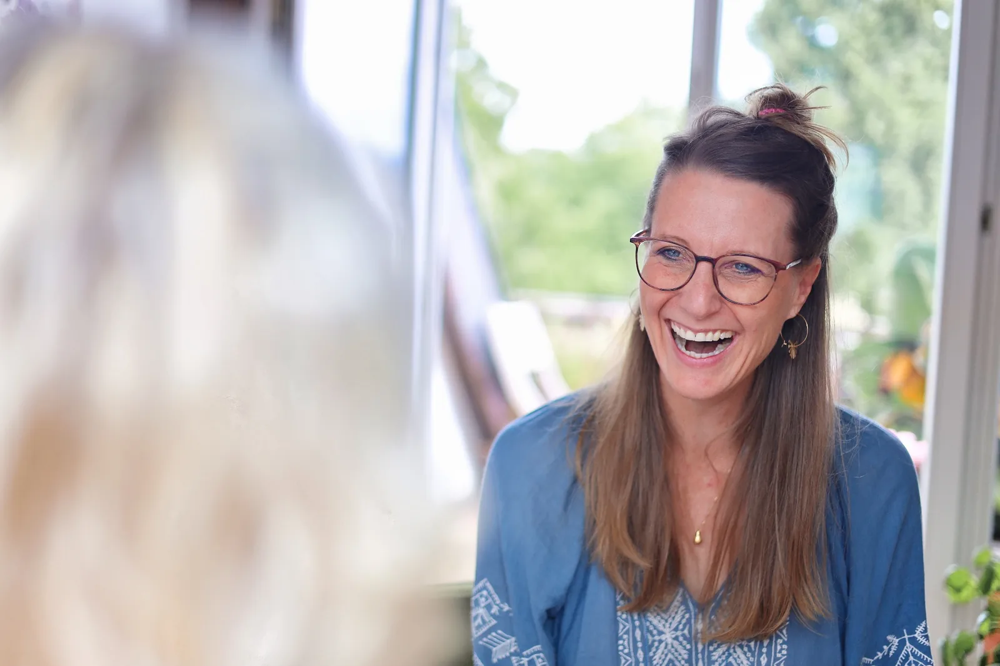

1:1 Dauer folgt Freiburg, bei Furtwangen oder online
Einzelbegleitung
An der eigenen Seite stehen.
Für Menschen in Krisen und Übergängen und für alle, die sich selbst besser kennenlernen möchten. Mit IFS, Nervensystemarbeit sowie körperorientierten und achtsamkeitsbasierten Zugängen.